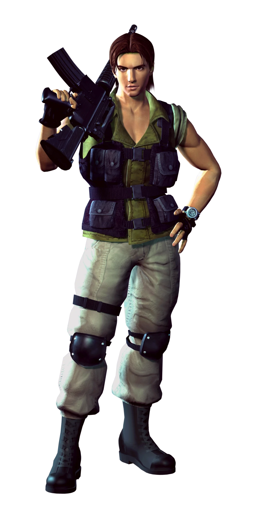

Fue el primer personaje jugable de toda la saga apareciendo por primera vez en Resident Evil. Es el hermano mayor de Claire Redfield, fue un miembro destacado en S.T.A.R.S. Mantiene un lazo fuerte con su ex-compañera Jill Valentine y es muy amigo de Barry Burton. Actualmente trabaja en la B.S.A.A. Como Oficial Comandante de la Rama Norteamericana[11] y también como comandante del escuadrón de elite Hound Wolf.
Claire Redfield
Es la hermana menor de Chris Redfield, fue compañera de Leon S. Kennedy en Resident Evil 2, Es una de los pocos supervivientes del desastre en Raccoon City. Antes del comienzo de su aventura, Claire era una estudiante universitaria quien al no tener noticias de su hermano, decidió ir a buscarlo en Raccoon City, ignorando los peligros que estaban aguardando por ella. Dicha experiencia cambió su vida para siempre.
Rebecca Chambers
Recordada por su brillante intelecto y conocimientos en la medicina (bioquímica), así como haber sido capaz de graduarse en la universidad a sus cortos 18 años. Gracias a tan valiosos antecedentes, éstos le valieron para ser aceptada en la unidad especial de la R.P.D., conocida como S.T.A.R.S.
Carlos Oliveira

Es experto en armas pesadas y operaciones con vehículos, haciendo de él un miembro de mucho valor. Es una persona afectuosa y suele bromear a menudo. Quizá, por haber crecido en un ambiente de violencia, es valiente y siempre está dispuesto a enfrentarse al peligro
Leon Scott Kennedy
Es uno de los personajes principales de la saga Resident Evil; él es uno de los protagonistas de Resident Evil 2, protagonista principal de Resident Evil 4 y uno de los protagonistas en Resident Evil 6. Nació en el año 1977. Es un agente del gobierno de EE.UU., de la organización especial D.S.O. (División de Operaciones de Seguridad). Durante los acontecimientos de septiembre de 1998
Jill Valentine
el primer personaje femenino de la franquicia en ser controlable por el jugador, antecedida por su ex-compañero Chris Redfield, con quien mantiene un fuerte lazo. Jill ha aparecido en muchas entregas como juegos, mangas, cómics, libros, películas entre otras cosas, lo que la convierte en uno de los personajes clave de la historia. Se preocupa mucho por sus compañeros y siempre trata de ayudarlos en caso de que la necesiten, además, es una experta abriendo cerraduras simples y desactivando bombas.
Ada Wong
Se trata DE UNA agente espía estadounidense de rasgos orientales. es un completo misterio, Tanto su origen étnico como su nacionalidad actual son totalmente desconocidos, aunque debido a sus rasgos se la puede identificar como "asiática". Su único dato biográfico fiable es su año de nacimiento (1974). Incluso su nombre, Ada Wong, no se sabe si es real.
Ethan Winters
protagonista del juego Resident Evil 7: Biohazard y en Resident Evil: Village. Nació en 1984 y de adulto conoció a una mujer llamada Mia, con el tiempo se volvieron novios y en 2011 se casaron, convirtiéndola en su esposa. Ellos decidieron vivir en Texas donde vivieron felizmente. Durante su relación, Ethan preguntaba sobre el trabajo de Mia, ignorando que trabajaba para Las Conexiones, una compañía que se dedica a la fabricación y producción de armas biológicas. Ella siempre le mentía causando que empezara a desconfiar en ella y que afectara su relación.